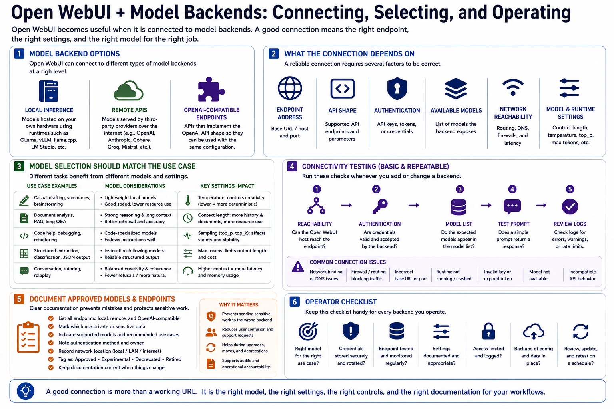

Connecting Models and Runtimes
Connecting to LMS... Progress: in progress

Narration
Open WebUI becomes useful when it is connected to model backends. Those backends may be local inference services, remote APIs, or OpenAI-compatible endpoints at a high level. The connection usually depends on an endpoint address, supported API shape, authentication details, available model names, network reachability, and settings such as context length or generation parameters.
Model selection should be tied to use case. A lightweight local model may be fine for casual drafting, while document analysis, code help, or structured extraction may need a different model. Temperature and sampling settings influence how deterministic or varied responses feel. Context length affects how much conversation and supporting material can be considered, but larger context can increase resource use and latency.
Connectivity testing should be basic and repeatable. Confirm that the endpoint is reachable from the Open WebUI host, that credentials are valid, that the expected models appear, and that a simple prompt returns a response. Failed connections may come from network binding, firewall rules, incorrect base URLs, unavailable runtimes, invalid keys, missing models, or incompatible API behavior.
Document approved models and endpoints. Operators should know which endpoints are local, which are remote, which use private data, which are experimental, and which are appropriate for specific workflows. Documentation reduces confusion when models are renamed, moved, upgraded, or retired. It also helps users avoid sending sensitive work to the wrong backend.